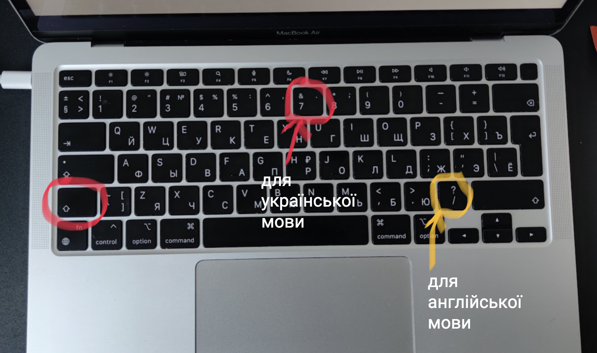
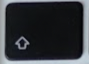
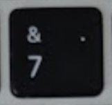
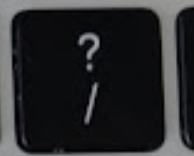

Часто при наборі тексту у нових користувачів макбуків виникають проблеми з пошуком деяких букв та символів на клавіатурі мак. Тож я вирішив показати на зображенні де знаходиться знак питання "?".

Знак питання "?" на мак (українська мова клавіатури)
Якщо ви друкуєте українською мовою щоб поставити знак питання треба затиснути клавішу SHIFT (  
Знак питання "?" на мак (англійська мова клавіатури)
Якщо ви друкуєте англійською мовою щоб поставити знак питання треба затиснути клавішу SHIFT () та натиснути кнопку з зображенням знаку питання /? ( 
Дізнайтесь розміщення інших символів на клавіатурі макбуку на сторінці: Клавіатура мак.